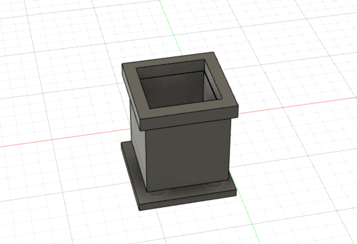
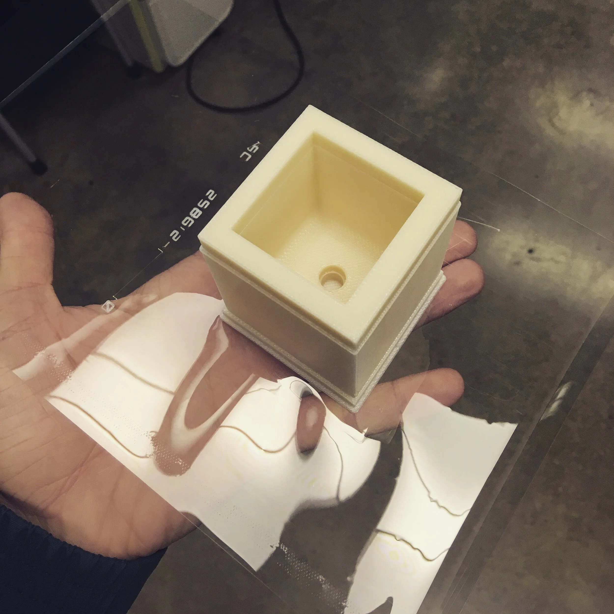
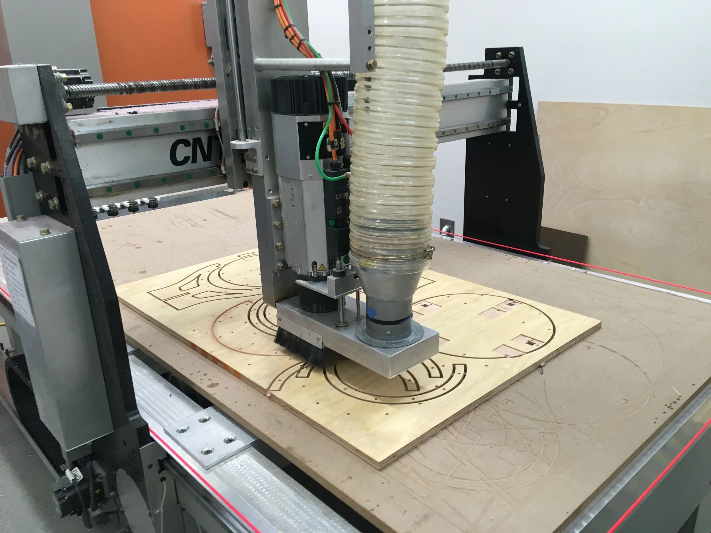
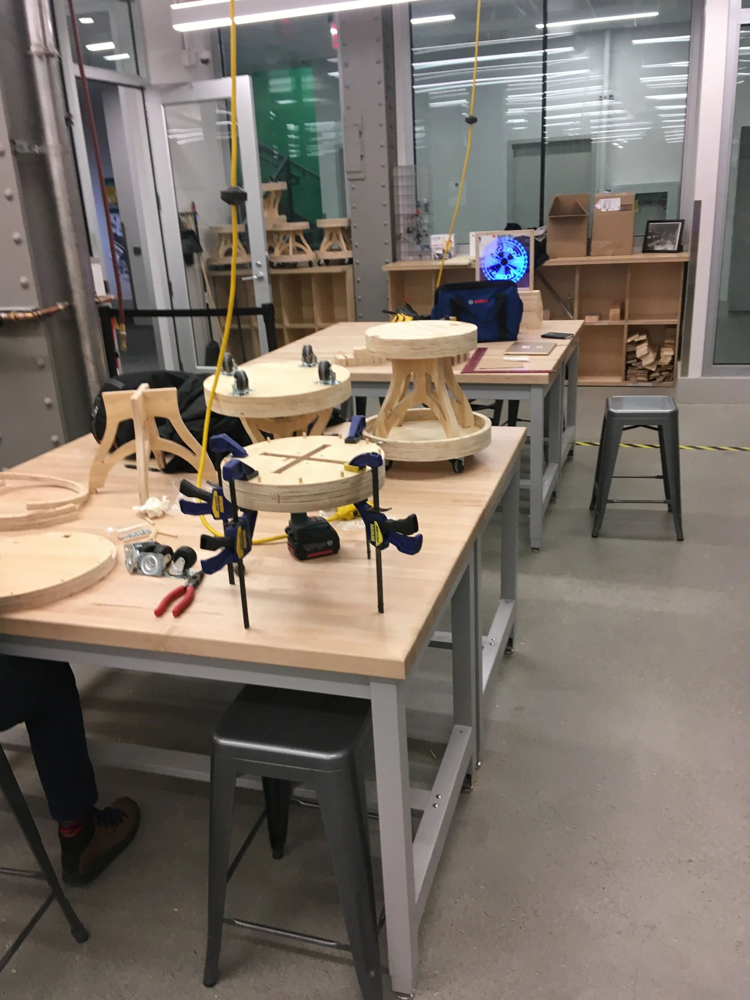
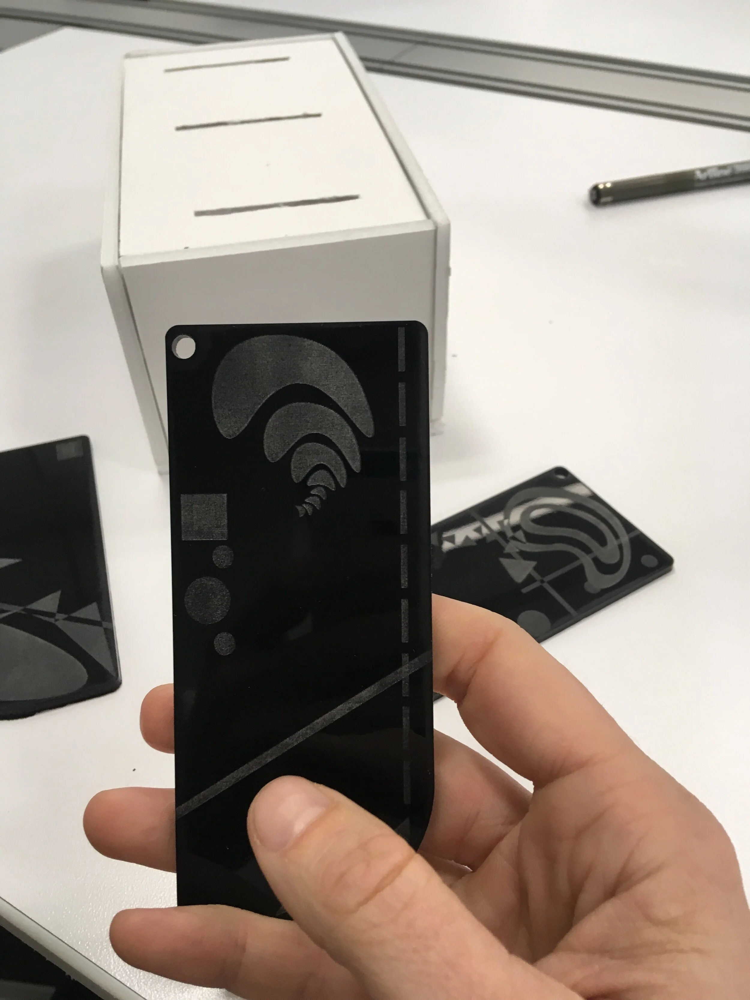
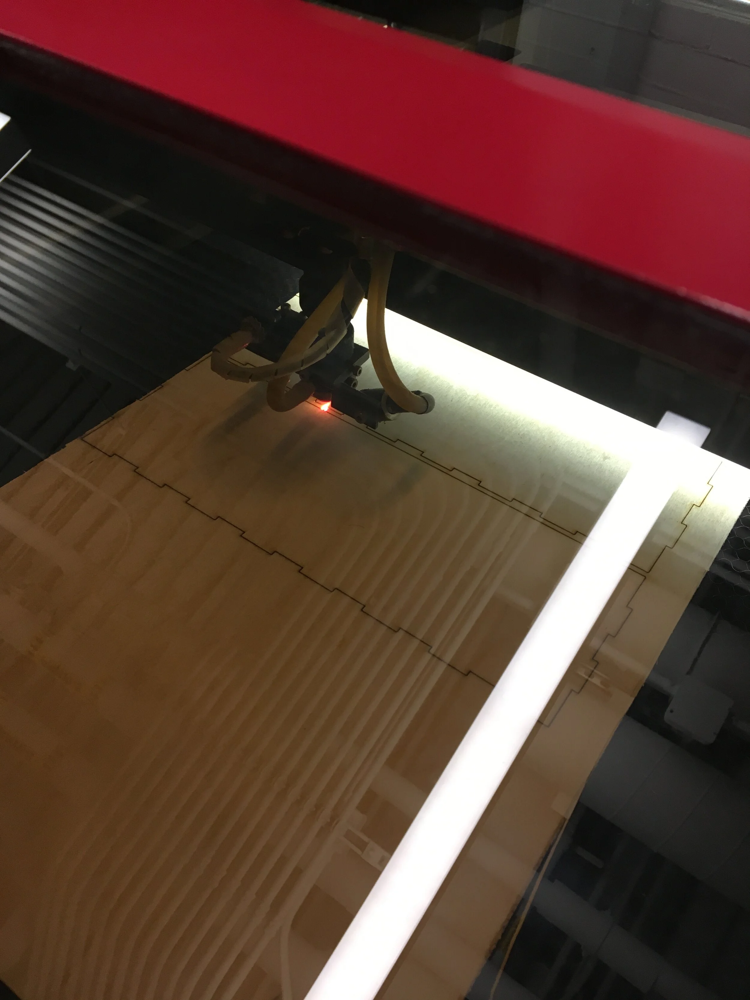
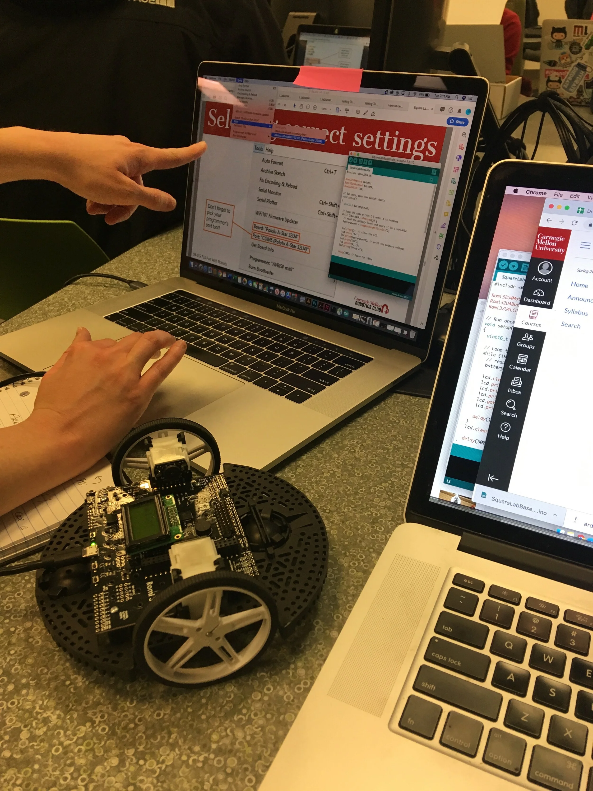
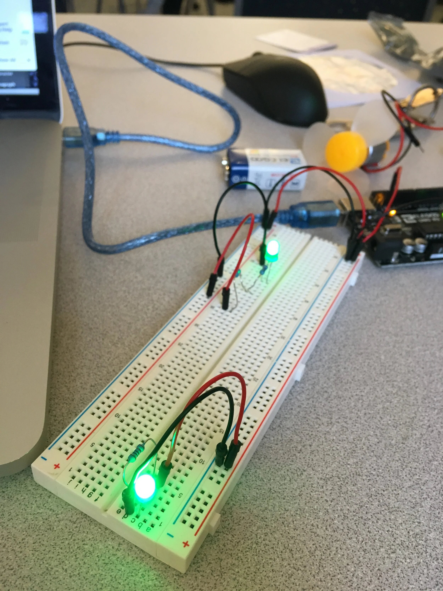

Designing Physical Objects
Before going to school at CMU I hadn’t gotten the opportunity to design physical artifacts for the real world or used many of the latest prototyping tools. To ensure that I could prototype and test not just software, but objects as well, I learned how to use CNC routers, 3D printings, laser cutters, and physical computing. This new world of making also brought with it many new software and techniques that now inform my design even when I’m building for the digital world.
Fusion 360 and 3d Printing
There is a lot of flexibility and depth in Fusion 360 and 3D printing. Learning to use the options offered by both has allowed me to better map for physical objects and bring designs to life.
View fullsize
View fullsize
CNC Router
Used in partnership with CMU’s Tech Spark, with a mix of rendering software and mechanized drill bits I learned to create wooded prototypes. With this skill, I could quickly prototype physical products at high quality that could give my team a physical and sturdy design.
View fullsize
View fullsize
Laser Cutting and Engraving
Beyond the practical use of being able to make clean in vectors, knowledge of laser cutting has allowed me to make fast and easy devices for understanding futures, providing educational structure, and more.
View fullsize
View fullsize
Arduino, Robots, and Physical Computing
In the quest to gain a better understanding of basic computing and mechanics, I took classes in robotics and Arduino. The outcomes have been a much more precise knowledge of technical limitations and the ability to install basic sensors and output functions into a prototype.
View fullsize
View fullsize
Previous
Previous
Design Future: Artifacts from a Plastic Future







